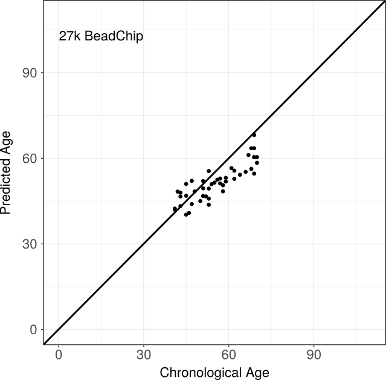
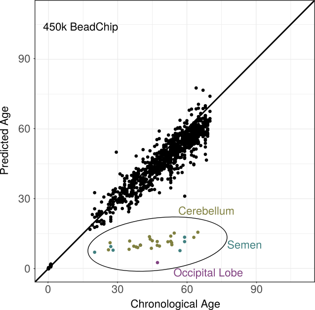
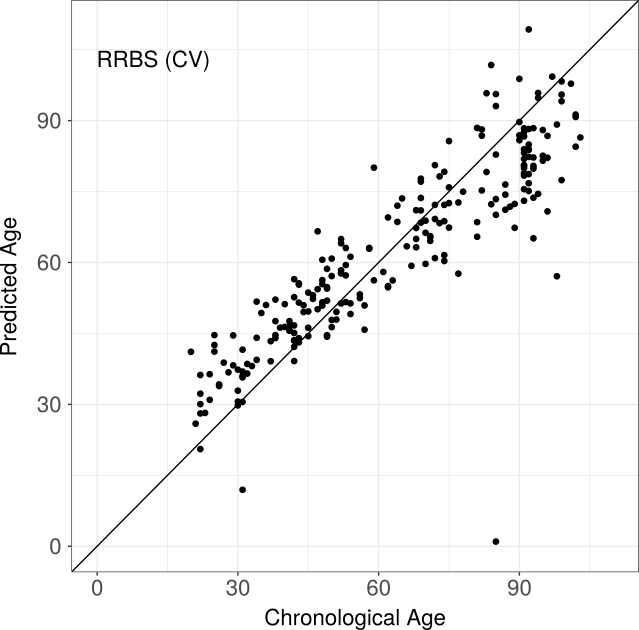

RnBeads' age prediction module employs machine learning to infer age information from DNA methylation data. It can predict age from methylation data obtained by virtually any protocol that provides single base pair resolution methylation calls, extending previously developed methods for epigenetic age inference. In addition to Illumina's methylation array series, this is the first method to support bisulfite-sequencing assays. Here we outline the methods employed and describe the data sets that were used to infer predictors for different technologies in detail. A detailed tutorial on how to use epigenetic age prediction in RnBeads can be found here.
The age prediction module employs elastic net regression using the glmnet R-package. A transformed version of the annotated age as suggested by Horvath et al. is used as response variable to reflect different pacing in epigenetic changes in younger and older ages, while DNA methylation values at single CpGs are used as features.
Since prediction accuracy increases with the number of analyzed samples, we collected methylation data from multiple, publicly available studies to provide users with a basis for annotating their own samples (see below). From these data sets, we compiled training data sets and inferred age predictors using elastic net regression as described above. The resulting pre-defined predictors are available as CSV files in the RnBeads package and can be directly applied to user-provided data sets.
Predictors were trained based on data from the Illumina Infinium HumanMethylation27 BeadChip, its successor the Infinium 450 BeadChip and Reduced-Representation Bisulfite Sequencing (RRBS). Note that we did not include the Illumina MethylationEPIC BeadChip and Whole-Genome Bisulfite-Sequencing data due to the lack of large representative data sets (hundreds of age-annotated training samples are required). However, first applications of the pre-defined predictors to EPIC data showed performance consistent with what we describe here.
The Infinium 27k BeadChip training data set comprised 2,286 sample from 6 different studies, collected from the gene expression omnibus (GEO). A detailed description of the studied can be found in the table below. Mainly blood samples, but also colon samples are contained in the training data set, while the test data set only consists of blood samples. Applying the above workflow, we detected 366 CpG sites to be predictive of the donor’s age. Evaluation of the pre-defined predictor was based on 10-fold cross validation on the training data set and on the independent test data set. While cross validation resulted in a correlation of 0.958 and a median absolute difference (MADiff) of 3.23 years between annotated and predicted ages, performance on the test data set was 86 % correlation and MADiff 5.13.
Similarly, the training data set consisted of 1,866 samples from 20 studies, either from GEO or TCGA, and contained ages between 0 and 103 years. In addition to the majority of blood samples, kidney and brain tissues were included. An independent test data set comprising 1,007 mainly blood samples was used to evaluate performance of the pre-defined predictor, which selected 761 age-associated CpGs. In line with the findings for its predecessor chip, cross validation proved high predictive performance (correlation 0.95, MADiff 2.8 years) underpinned by the independent test data set (0.89 and 2.94 years).
This data set contains blood samples from 232 individuals of German origin covering an age range of 20-103 years. No independent test data set was available due to the still limited number of bisulfite studies addressing methylation changes associated with healthy human aging. Nevertheless, the feature selection method employed by RnBeads determines 156 sites associated with the aging process and cross validation showed reasonable predictive performance (correlation 0.93, MADiff 6.37 years)
The table below describes the data sets used in RnBeads' age prediction module both for training and testing purposes.
| Data Type | Use | Source | Accession | Size | Tissue | Donor characteristic |
|---|---|---|---|---|---|---|
| 27k | Training | GEO | GSE56606 | 90 | CD14-cells | diabetic |
| GSE41037 | 720 | blood, brain | healthy | |||
| GSE48988 | 178 | colon | aspirin intake | |||
| GSE58119 | 282 | blood serum | BRCA-1 mutation | |||
| GSE19711 | 540 | whole blood | healthy | |||
| GSE27097 | 398 | cord blood | pediatric | |||
| Training Data Set | 2,289 | |||||
| Test | GEO | GSE44763 | 46 | brain | obese | |
| Test Data Set | 46 | |||||
| 450k | Training | TCGA | BRCA | 96 | breast | breast carcinoma |
| ESCA | 16 | esophagus | esophageal carcinoma | |||
| GBM | 1 | brain | glioblastoma multiforme | |||
| HNSC | 50 | head and neck | head and neck squamous cell carcinoma | |||
| KIRC | 160 | kidney | kidney renal clear cell carcinoma | |||
| LIHC | 48 | liver | liver hepatocellular carcinoma | |||
| LUAD | 32 | lung | lung adenocarcinoma | |||
| LUSC | 42 | lung | lung squamous cell carcinoma | |||
| PAAD | 8 | pancreas | pancreatic adenocarcinoma | |||
| KIRP | 45 | kidney | kidney renal papillary cell carcinoma | |||
| GEO | GSE51057 | 177 | blood | all female | ||
| GSE41169 | 95 | brain | aging | |||
| GSE48472 | 45 | multiple tissues (e.g. blood, hair, omentum) | ||||
| GSE50498 | 48 | skeletal muscle | healthy | |||
| GSE41826 | 145 | brain | ||||
| GSE30870 | 40 | blood | newborns | |||
| GSE40360 | 46 | brain | multiple-sclerosis | |||
| GSE40279 | 656 | whole blood | ||||
| GSE48325 | 85 | liver | non-alcoholic fatty liver | |||
| Training Data Set | 1,866 | |||||
| Test | GEO | GSE34639 | 48 | CD4+-cells | newborns | |
| GSE53841 | 24 | blood | HIV-1 infection | |||
| GSE59457 | 130 | brain | HIV-1 infection | |||
| GSE67751 | 92 | blood | HIV-1 infection | |||
| GSE59505 | 24 | multiple tissues (e.g semen,saliva) | ||||
| GSE42861 | 689 | blood | rheumatoid arthritis | |||
| Test Data Set | 1,007 | |||||
| RRBS | Training | Kiel | NA | 232 | blood |